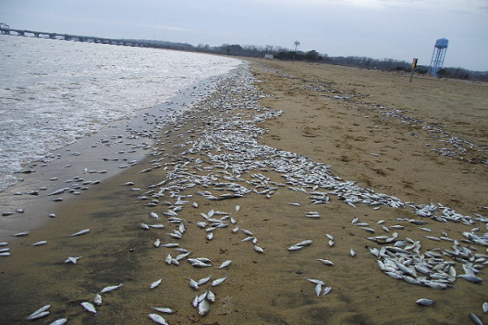
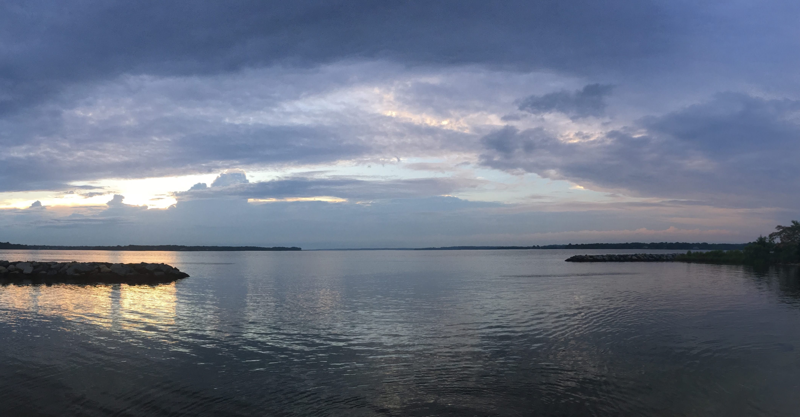

The health of the Maryland watershed is of utmost importance. It provides recreation, work, and trade to the citizens residing in the state. This is why the state keeps a very close eye on the condition of waterways. One way that scientists in Maryland tracks the health of those waterways is by keeping track of the fish that reside within those waterways. If something is wrong, they are typically the first to notice, and the first to die. When a large number of fish die in one area, it is referred to as a Fish Kill. The Maryland Department of the Environment keeps track of reports they receive, investigating the most concerning events.
Causes are sorted into three categories: natural, pollution, and miscellaneous human activity. Natural causes are classified as events such as disease, weather, algae blooms etc. Figure A shows a sharp spike in 2018. This was due to a cold snap that froze shallow habitats in Somerset County, the event killed an estimated two million fish. Most other years see the most common cause for reports being low dissolved oxygen. While the cause is listed as natural, low dissolved oxygen can form from man-made causes. According to the Chesapeake Bay Program, a partnership aimed at restoring the aforementioned bay, high temperatures, nutrient pollution and water flow issues are the causes for low dissolved oxygen. Nutrient pollution in particular comes from agriculural runoff, which causes excess algal blooms which then lowers the amount of dissolved oxygen.
Pollution has been the least reported category in the last 8 years. This category accounts for agricultural, industrial, and other forms of chemical discharge like oil spills or construction runoff. In 2023, only 10% of reports came from pollution events.
Miscellaneous human activity accounted for 25% of the reports in 2023. This category includes discards, waterway stocking issues and entrapment.
When a fish kill event occurs, the Maryland Department of the Environment investigates and determines the cause of death for the fish. Once determined, a solution can be formed. Depending on the issue presented, policy might be proposed or clean ups may occur. There are many organizations focused on the conservation of Maryland's watershed.


Patuxent River